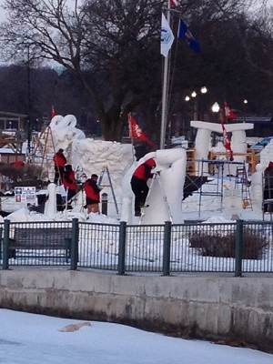
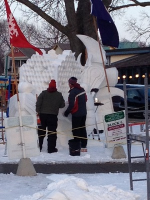
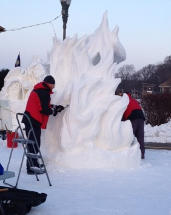

Drop everything and head out for an awe-inspiring, exhilarating, outdoor experience. Lake Geneva, located in southwestern Wisconsin is celebrating their 21st annual Winterfest February 3rd through the 7th. You'll be happy you made the trip, and anxious for the next!
U.S. Snow Sculpting Competition
Lake Geneva's annual Winterfest and U.S. Snow Sculpting Competition attracts ice sculptors from around the country for this 3 day event. The artists sculpt their pieces on the grounds of the famed Riviera(Driehaus Plaza) in downtown Lake Geneva, on the shore of beautiful Geneva Lake, and also in Flat Iron Park, just SE of the plaza.
The sculpting begins on Wednesday morning (2/3) and continues through Saturday morning (2/6) at 11a.m., when all sculptures are required to be completed.
Saturday at 3p.m. the judges will award the victors. The Champion, which goes on to a worldwide competition, as well as Second and Third place are all acknowledged.
 

2015 U.S. snow sculpting teams hard at work, racing to meet the deadline
so what's happening exactly?
This is the 21st annual, and pretty much EVERYWHERE you would want to venture in town has Winterfest activities, specials, and events, there is something for everyone!
The Riviera, from 10am-3pm daily, will provide entertainment, food, fun, exhibitor informaton and souvenirs; they will also provide children's entertainment
The second annual cocoa crawl on 2/5 from 4-8pm, pick up a map at 729 Main Street and vote for the best at that address
Helicopter rides next to the Riviera
The Baker House at 327 Wrigley(within view of Flat Iron Park) will feature their 6th annual "Fire & Ice" Lounge" on their lakefront garden beginning Friday at noon and ending at 6pm on Sunday
The Grand Geneva Resort will host their annual Winter Carnival with human bowling on the menu of fun snow activities. Open to the public as well as their guests
These are but a few of the attractions, come on up, down, or over to Lake Geneva and see what you've been missing!